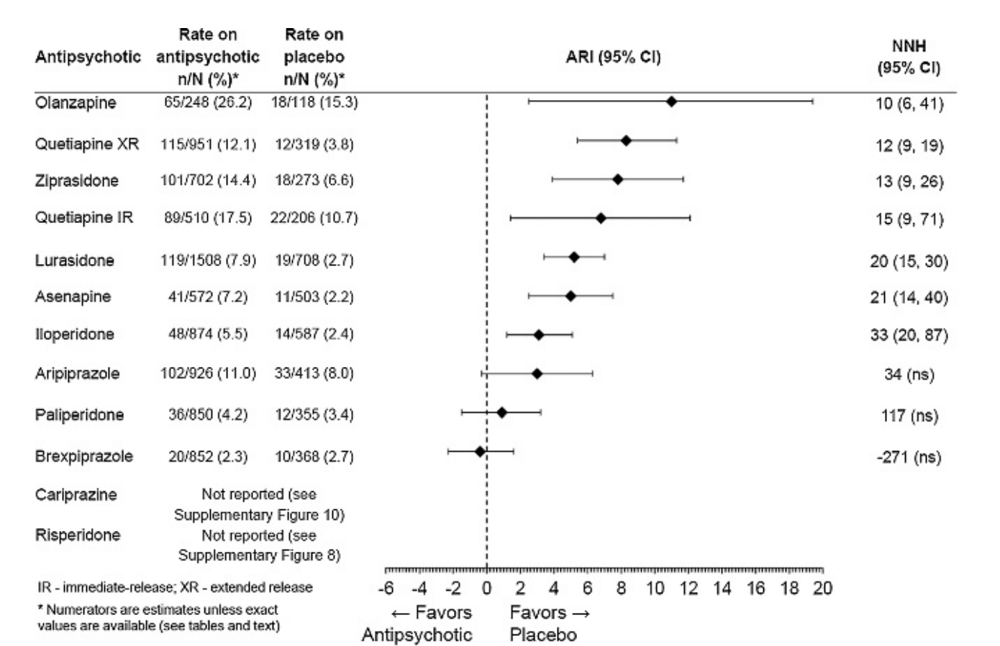
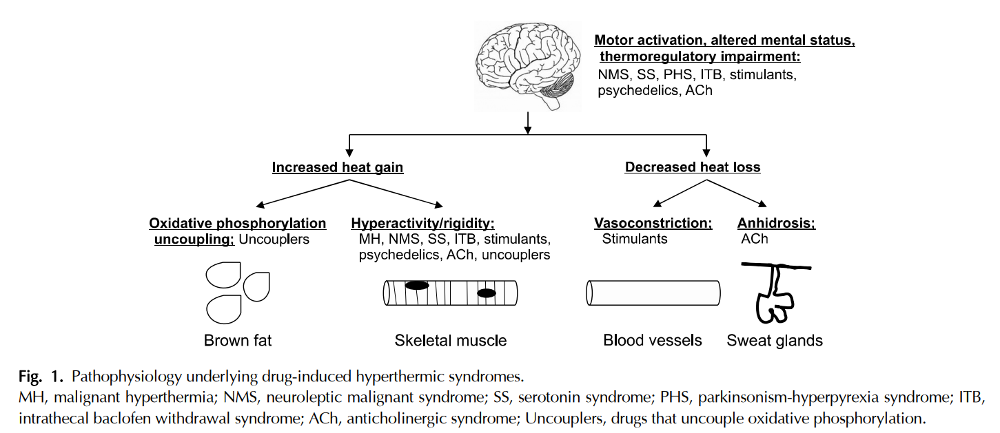

31 그 밖의 부작용
31.1 호흡기계 부작용
31.1.1 호흡곤란
31.1.1.1 후두 근긴장
항정신병 약물 복용 환자가 갑자기 호흡곤란을 일으키는 것은 1) 사레들림, 2) 후두 근긴장 이상(laryngeal dystonia), 3) 중추성 호흡 부전, 4) 수면 무호흡증 등으로 나눠 생각할 수 있다. 사레들림은 연하 곤란이 있는 환자에게 흔히 나타나며 (9-14-1 참조), 급하게 음식을 먹다가 목이 막히는 경우이다.
항정신병 약물에 의한 후두 근긴장 이상은 1978년 처음 보고된 바 있으며[1], 극히 드물지만 만약 나타난다면 치명적일 수 있다.[2,3] 진단하기는 매우 어렵지만 사경을 비롯한 다른 근긴장과 함께 나타나면 도움이 된다. 기도가 막혀 그렁거리는 협착음(stridor)이 들리고, 후두경으로 바라보면 성대가 비정상적으로 운동하는 것이 보인다고 한다.[4] 치료는 항파킨슨제제를 쓰는 것이며, 벤조디아제핀은 호흡부전을 일으켜 가뜩이나 어려운 호흡을 더욱 어렵게 만들 수 있다.[2] 대부분 급성 근긴장 이상이지만, 지연성으로 후두 근긴장이 나타난 사례가 보고되기도 하였다.[5,6]
31.1.1.2 중추성 호흡부전
벤조디아제핀계 약물과 아편양 약물이 중추성 호흡 부전을 일으킬 수 있다는 것은 오래전부터 잘 알려져 있다.[7–9] 이 때문에 만성 폐쇄성 폐질환(COPD) 환자에게 벤조디아제핀을 사용할 수 있느냐 없느냐는 오래 전부터 논쟁거리가 되어왔다. 그런데 문제는 COPD 환자에게 항정신병 약물을 사용했을 때에도 급성 호흡 부전이 올 위험이 1.6~2.3배 증가한다는 것이다.[10,11] 이 위험은 약물 사용을 멈추면 점점 감소하고, 또한 용량에 따른 효과도 관찰되었기 때문에 인과관계가 의심된다. 하지만 물론 항정신병 약물을 복용하는 COPD 환자는 대부분 벤조디아제핀 등 다양한 약물을 처방받고 있기 때문에 엄밀한 인과관계를 맺기는 아직 증거가 불충분하다.
31.1.1.3 수면 무호흡증
만약 코골이가 심한 환자라면 폐쇄성 수면 무호흡증을 의심하게 되는데, 몇몇 연구자들은 항정신병 약물이 수면 무호흡증의 위험을 높일 수 있다고 경고한다.[12] 그러나 조현병을 비롯한 정신질환을 앓고 있는 환자들은 과체중 등 수면 무호흡증의 위험 인자들을 이미 갖고 있기 때문에, 약물이 직접적 원인인지는 확실하지 않다. 분명한 것은 조현병, 우울증, 양극성 장애 등 주요 정신질환을 앓고 있는 환자들은 수면 무호흡증의 위험이 크며, 적절한 평가와 치료를 받아야 한다는 점이다.[13]
따라서 흡기시 후두 그렁거림 (stridor)를 동반한 급성 호흡 곤란은 항정신병 약물을 다루는 모든 의사들이 유념해야 하는 상태이다. 그리고 항파킨슨병 약제 역시 아주 경미한 호흡 곤란이 나타나도 즉각적으로 투약을 시작해야 한다.[14]
31.1.2 폐렴
전통적인 역학 연구에서 항정신병 약물 사용은 폐렴의 위험을 높인다는 것이 입증되었다. 심지어 정신질환을 앓고 있지 않는 노인 환자에서도 정형 및 비정형 항정신병 약물을 사용하면 폐렴 위험이 높아진다. 조현병 환자에서 현재 클로자핀을 사용하고 있는 것은 폐렴 위험을 3.18배 증가시키고, 올란자핀 및 퀘티아핀, 리스페리돈 등은 1.32~1.83배로 클로자핀보다는 낮지만 여전히 위험을 증가시킨다.[15] 모든 항정신병 약물을 통합하면 약 1.83배 위험을 높인다.[16]
클로자핀의 경우에는 지나친 진정 작용과 침흘림, 항체 생성을 억제하는 면역기능 변화 등이 폐렴의 위험을 높이는 것으로 이해할 수 있다.[17] 다른 항정신병 약물의 경우에도 역시 진정 작용과 연하 곤란이 원인이리라 짐작되지만, 분명한 원인을 콕 집어내기 어렵다. 클로자핀 복용 환자가 폐렴에 걸리면 신체 상태가 특히 더 악화되는데, 여기에는 다량 분비된 사이토카인이 CYP1A2를 방해하여 클로자핀의 혈중 농도가 급상승한 영향도 있다.[18]
클로자핀 복용 환자에 대해선 워낙 의사들이 조심을 하기 때문에 큰 문제가 안 될 수 있지만, 그보다 관심을 덜 받는 것은 섬망때문에 항정신병 약물을 투여받게 되는 노인 환자들이 폐렴에 걸리는 경우이다. 이는 워낙 흔한 일인데, 이 때 항정신병 약물을 계속 사용하는 것이 맞는지 당장 끊는 것이 맞는지 대답하기 어렵다. 혹자는 항정신병 약물이 폐렴 위험을 높인다는 불명예를 지게 된 것은, 이런 환자들 때문에 잘못 생긴 편향(protopathic bias1) 때문일 수도 있다고 지적할 정도이다.[19]
1 Protopathic bias: 어떤 질환을 경감시키기 위해 자주 사용하는 약물이, 마치 그 질환을 일으킨 주범인 것처럼 보여지는 착시현상. 예를 들어 협심증에 앞서 비특이적으로 나타나는 통증을 조절하기 위해 NSAID를 사용하는 환자가 많다면, 나중에 역학조사를 했을 때 마치 NSAID 사용이 협십증에 선행하는, 즉 NSAID가 협심증을 일으킨 것과 같은 결과를 얻게 된다.
항정신병 약물이 폐렴 위험을 높인다고 해서, 섬망 때문에 위험한 행동을 보이는 환자에게도 약물을 쓰지 않는다는 것은 주객이 전도된 형편일 것이다. 정 사용할 수 밖에 없는 상황이라면 과감히 쓰되, 최소한의 용량으로, 가급적이면 진정 작용을 가중시키는 다른 병용 약물 없이 사용하는 것이 바람직할 것이다.[19]
31.2
31.3 혈액 질환
31.3.1 백혈구/호중구감소증
백혈구/호중구감소증은 클로자핀의 독특한 부작용으로 의사들의 뇌리에 박혀있지만, 정형 약물 시절에도 이미 phenothiazine 계 약물이나 일부 항경련제를 사용하던 중 치명적인 무과립구증이 발생하는 사례가 드물지 않았다.[20,21] 지금과 같이 모니터링 지침이 있었던 것도 아니요, 감염관리시설이 제대로 갖춰진 것도 아니었기 때문에 환자들은 속절없이 목숨을 잃곤 하였다. 의사들 역시 제대로 된 무기 하나없이 환자의 목숨을 지키느라 동분서주하였다.
건강인의 정상적인 백혈구 수는 4,000~11,000/μL 정도로, 3,500/μL 이하로 내려가면 백혈구 감소증(leukopenia)이라고 한다. 백혈구 중에서도 가장 많은 부분(50~70%)을 차지하는 세포는 호중구인데, 전체 면역 기능 중에서 가장 중요한 역할을 담당하기 때문에 보통 이 수치(absolute neutrophil count, ANC)를 중요시 한다. ANC가 1,500/μL 이하면 호중구감소증(neutropenia)이라고 하는데, 500/μL 이하로 감소하면 세균, 진균, 바이러스에 대한 자연 방어선이 무너지면서 기회 감염2이 발생할 수 있다. 이때 만약 치료 시기를 놓친다면 급격한 폐혈증으로 악화되어 생명을 잃을 수 있다. 물론 경도(1,500/μL이하)나 중등도(1,000/μL이하)의 호중구감소증은 감염 위험을 높이지 않기 때문에 그 자체로는 의미가 없다. 다만 조만간 무과립구증에 빠질 수 있다는 선행 지표로서 의미가 있을 뿐이다. 하지만 호중구감소증과 무과립구증은 서로 다른 기전에 의해 일어날 가능성이 크다. 흑인이나 아랍계 민족에서 흔히 발견되는 양성 민족성 호중구감소증3환자들은 호중구 수치가 평생 1,000~1,500/μL 정도에서 맴돌지만, 이들이 감염에 취약하다는 증거는 없다. 더군다나 호중구감소증은 여성에게 많고 나이가 적을수록 빈번한데 비해, 무과립구증은 주로 남성, 40~59세에서 잘 발생한다.
2 기회 감염 (opportunistic infection): 건강한 면역 체계가 유지되는 사람에게는 질병을 일으키지 않는 병원체가 면역계의 균형이 무너진 기회를 틈타 심각한 감염병을 일으키는 것을 말한다.이들 병원체 중 일부는 평상시에도 체외 혹은 체내에 공존하는 정상 상재균(normal flora)에 속한다. 이런 병원체가 감염병을 일으킨다는 것은 면역 체계가 거의 기능을 하지 못한다는 뜻이다.
3 양성 민족성 호중구감소증 (benign ethnic neutropenia, BEN): 호중구가 감소할 다른 어떤 이유가 없는데도 만성적으로 호중구 수치가 1,500/μL이하로 유지되는 상태로, 감염의 위험이 높아지지는 않는다. 이 상태는 아프리카 흑인의 25~50%, 미국 거주 흑인의 4.5%, 아랍인의 10.7%에서 발견될 정도로 흔하다. 원인은 정확히 모르지만, DARC (Duffy antigen receptor for chemokines) 유전자 변이와 연관이 있을 것이라 여겨진다.
31.3.1.1 기전
우연히 호중구감소증이 발견되면 바짝 긴장하게 되는데, 안타깝게도 무과립구증으로 진행될 지 여부를 예측하는 확실한 방법이 없다. 또한 선행하는 호중구감소증없이 급격히 무과립구증이 발생하는 경우도 없지 않다. 혈구가 줄어드는 기전도 아직 확실하지 않다. 골수에서의 생성 억제 및 기존 호중구의 파괴가 동시에 작용하는 것 같다. 대부분의 연구는 무과립구증에 초점을 맞추어 진행되었기 때문에 호중구감소증의 기전과는 맞지 않을 수 있다. 단편적인 결과들을 종합하면 자가면역 기전이 관여하고 있으리라 짐작된다. 과거에는 클로자핀 자체 혹은 주요 대사물인 norclozapine이 골수 세포를 직접 억압한다고 의심되었으나[22], 현재는 호중구가 클로자핀을 대사할 때 만들어지는 nitrenium ion이 원인으로 지목되고 있다. 이 물질은 활성이 강하여 직접 DNA를 손상시킬 수 있으며, 세포막에 달라붙어 자가면역반응4을 일으키고, glutathione5을 소모시켜 세포막의 온전성을 훼손시킨다. 결과적으로 호중구의 세포 자멸사(apoptosis)를 유도한다.[23,24] 또 다른 가설은 약물이 G-CSF 분비 주기를 혼란에 빠뜨린다는 것이다. 대부분의 환자들은 클로자핀 사용 초반에, G-CSF 분비가 급증하면서 혈구수도 함께 증가하는 호중구증가증(leukocytosis) 상태를 보인다.[25,26] 그러다가 막상 무과립구증이 올 때는 G-CSF가 거의 분비되지 않는다.[27] 그래서 G-CSF 농도의 급격한 변화를 무과립구증의 선행 지표로 삼기도 한다.[28] 물론 어느 것이 선행하는 원인인지는 확실하지 않지만, G-CSF 분비 주기의 급격한 변화가 무과립구증의 원인일 가능성이 있다.
4 Cell surface haptenation: nitrenium ion은 저분자량 항원 즉 hapten으로서 세포막에 달라붙는데, 그러면 면역체계가 세포를 이물질로 인식하여 자가면역 반응이 일어난다.
5 Glutathione: 대표적인 항산화물질로 세포 대사 중 어쩔 수 없이 생성되는 자유기(free radical)를 제거한다.
31.3.1.2 치료 및 대처
호중구감소증이 발견되었다고 놀랄 필요는 없지만, 만에 하나 무과립구증으로의 진행을 예방하기 위해 혈구수가 정상으로 돌아올때까지 반복해서 혈구 검사를 해야 한다. 또한 후향적으로 감염이나 영양 결핍 등 선행하는 다른 원인을 찾아보아야 하며, 전향적으로 감염의 징후가 새로 나타나는지 세심히 살펴야 한다. 만약 감소의 폭이 크고, 지속적으로 감소하고 있으며, 혈구수에 영향을 주는 다른 약물(예를 들어 carbamazepine, amoxicillin, ticlopidine 등)을 복용하고 있다면, 항정신병 약물을 일단 중단한다. 약물이 원인이었다면, 중단하고 난 뒤 1~2주 내로 호중구가 정상화되는 것을 기대할 수 있다.[29]
가이드라인에서는 중등도의 호중구감소증에서도 클로자핀을 끊는 것으로 되어있으며, 호중구 수치가 다시 1,000/μL 이상으로 회복되어야 약을 다시 쓸 수 있다. 그러나 클로자핀을 갑자기 끊는 것은 현실적으로 쉽지 않다. 콜린성 반동이 걱정될 뿐 아니라, 금단 정신병 등 증상 악화가 예상되기 때문이다. 실제 무과립구증 사례를 보면, 호중구감소증이 처음 발견된 후 무과립구증으로 진행할 때까지 1주일 정도가 걸리기 때문에, 호중구감소증이 발견되면 약 1주일에 걸쳐 클로자핀을 점진적으로 감량한다. 만약 무과립구증이 확인된다면 중간에라도 여지없이 클로자핀을 끊어야 한다. 약을 끊는 것만으로 혈구 수가 회복되면 다행이지만, 그렇지 않다면 합성 G-CSF 혹은 GM-CSF6를 사용하게 된다. 약의 효과는 호중구가 정상화되는 기간을 단축하는 것으로, 약을 쓰지 않았을 때와 비교하여 약 절반 정도로 줄일 수 있다고 한다. 그러나 G-CSF는 항암치료 환자의 호중구감소증 예방에 뚜렷한 효과를 보이지 못하고 있으며, 위약 대조군 연구가 없는 상황에서 G-CSF의 효과가 부풀려졌을 가능성이 있다.[30] 그 밖에도 기회감염이 우려되는 징후가이 발견된다면 항생제 및 항진균제를 사용하게 된다.
6 Granulocyte colony-stimulating factor (G-CSF), GM-CSF (granulocyte-macrophage colony-stimulating factor (GM-CSF): 항암치료 중 발생한 무과립구증을 치료하기 위해 합성 G-CSF, GM-CSF가 개발되었으며, filgrastim (Neupogen ®), pegfilgrastim (Neulasta ®), lenograstim (Neutrogin ®)등 다수의 약물이 있다. 이들은 피하주사라서 사용이 불편하고, 가격이 비싼 데 비해 효과가 확실하지 않으며, 상당한 부작용마저 감수해야 한다.
31.3.2 백혈구/호중구증가증
백혈구/호중구가 증가하는데 대해서는 환자는 물론 의사도 크게 신경을 쓰지 않지만, 사실 클로자핀 투여 중에 호중구감소증보다는 호중구증가증(neutrophilia)이 훨씬 더 자주 나타난다. 리튬 역시 백혈구/호중구를 증가시키며 이 역시 신체 건강에 별 영향을 끼치지 않는다. 백혈구의 정상 수치는 4,000~11,000/μL로 잡고 있으며, 이에 해당하는 호중구 수치는 7,500/μL 정도이다. 정상 신체에서 감염 시 백혈구는 40,000/μL, 호중구는 25,000/μL 정도 까지 증가하며, 이는 지극히 정상적인 면역 반응을 의미한다.
따라서 백혈구/호중구가 증가하면 의사들은 다짜고짜 감염 병소를 찾는데 주력하는데, 실제로는 감염과 상관없는 경우가 많다. 리튬, 스테로이드, NSAID, G-CSF 등에 의해 혈구 수치가 올라갈 수 있으며, 심지어 격렬한 운동 후에도 수치가 상승한다. 클로자핀 사용 후 약 절반에 가까운 환자가, 투여 후 약 1~3주 사이에 발열과 백혈구/호중구증가증을 보이는데, 이 환자들에게서 별다른 감염의 증거는 찾을 수 없다.[31,32] 이 현상은 IL-6, TNF 등 사이토카인 분비때문으로 여겨지며, 수일 내에 저절로 소실된다.
한편 클로자핀 투여 환자 중 일부는 역시 감염의 증거없이 백혈구/호중구가 증가된 상태를 오래도록 유지한다.[33] 남성, 리튬의 병용, 흡연 등이 유발 인자로 지목되고 있으며, 일부 저자는 만성 호중구증가증이 클로자핀 저항성을 시사할 지 모른다고 지적하고 있다.[34] 또한 상승된 백혈구가 심근염, 췌장염 등 진단이 쉽지 않은 부작용의 증거일지도 모른다.[35,36] 그러나 연구자들의 보편적인 견해는 백혈구/호중구증가증은 임상적으로 큰 의미가 없으며, 주기적인 모니터링도 필요하지 않다는 쪽이다.[34]
31.3.3 혈소판감소증
혈소판감소증은 혈소판 수치가 150,000/μL 이하로 떨어진 상태를 말한다. 약물 유발 혈소판 감소증은 혈소판에 반응하는 항체가 생겨 혈소판을 파괴하는 자가면역 반응으로 이해된다. 항정신병 약물에 의한 혈소판 감소증은 매우 드문 경우이지만, 다른 혈액관련 부작용과 마찬가지로 phenothiazine계 약물 및 클로자핀, 올란자핀에서 주로 보고되었다.[37–39]
출혈 위험은 환자마다 다르기 때문에, 혈소판 수치가 어느 정도 이하면 위험하다는 기준이 따로 정해져 있는 것은 아니다. 일반적으로는 50,000/μL 이하면 심각한 상황으로 보며, 20,000/μL 이하로 떨어지면 외상없이도 자연 출혈이 발생할 수 있다.[39] 항정신병 약물은 혈소판 숫자를 줄일 수도 있지만, 혈소판 기능을 방해하기도 한다. 혈소판은 adenosine diphosphate (ADP)의 자극을 받아 응집을 이루는데, 항정신병 약물은 혈소판의 ADP 반응성을 줄인다.[40] 하지만 혈소판이 다른 단백질에 부착되는 것을 자극하고, aPTT를 단축시키는 등 정반대되는 효과를 보여 혈전증의 위험을 높이기도 한다.[41] 다시 말하여 어느 한편으로는 자발적 출혈을 걱정해야 하고, 다른 한편으로는 혈전/색전증을 우려해야 하는 곤란한 상황에 처하게 된다.[42]
31.3.4 빈혈
항정신병 약물 특히 클로자핀은 다양한 혈액학적 부작용을 일으키지만, 그 중 호중구감소증/무과립구증 그리고 혈소판감소증 정도만이 의사들의 관심을 끌 뿐, 다른 부작용은 그다지 언급되지 않는다. 하지만 약물에 의한 재생불량성 빈혈이나 용혈성 빈혈은 드문 일이 아니기 때문에, 항정신병 약물이라고 해서 예외가 될 수는 없다. 예를 들어 과거 항정신병 약물로 도입되었던 remoxipride는 재생불량성 빈혈을 일으켜 시장에서 퇴출된 바 있다.[43]
역설적으로 클로자핀을 사용하는 환자들은 정기적으로 혈구 검사를 하기 때문에, 자연스레 빈혈이 일찍 발견되고 적절한 조치가 이루어 진다. 이에 비해 기타 항정신병 약물을 투여하는 경우에는, 빈혈을 전혀 의심하지 않고 있다가 우연히 발견되는 경우가 있다. 아무래도 클로자핀[44,45]과 관련된 사례가 가장 많이 보고되었지만, 아리피프라졸[42], 퀘티아핀[46] 등 혈액학적 부작용과 거리가 멀어보이는 약물 사용 중에도 심한 빈혈이 발견되었다. 특이 반응에 의한 재생불량성 혹은 용혈성 빈혈이 아니더라도, 단순한 철분결핍성 빈혈의 빈도도 꽤 높은 편이다. Lee 등[44]이 집계한 바에 따르면 클로자핀 투여 환자를 2년간 추적했을 때, 그 중 ¼ 정도에서 빈혈이 발견되었다.
물론 항정신병 약물을 끊어야 될 정도의 심각한 빈혈은 극히 드물다. 단순한 철분 결핍성 빈혈은 증상이 없을 뿐더러 별다른 개입이 필요하지도 않다. 고프로락틴혈증으로 무월경 상태에 있던 환자가, 약을 교체한 후 새삼스레 월경을 하기 시작하여 헤모글로빈 수치가 급격히 떨어지는 사례도 드물지 않다. 그러나 아무런 이유없이 헤모글로빈 수치가 점점 더 떨어지는 상황이라면 혈액종양내과에 정밀 검사를 의뢰해야 한다.
31.3.5 호산구증가증
호산구는 백혈구 중에서 약 7~8%를 차지하며, 정상인에서 그 수는 100~500/μL 정도이다. 호산구 수가 500/μL 이상이면 호산구 증가증(eosinophilia)이라 하며, 1,500/μL이하면 경증, 5,000μL 이하면 중등도, 그 이상이면 중증이라 한다. 만약 중등도(1,500/μL 이상)의 호산구 증가증이 장기간 유지되면 과호산구증(hypereosinophilia)이라 한다.
경증이나 중등도의 호산구증가증 은 대부분 알레르기 반응을 시사한다. 알레르기성 비염, 천식, 부비동염, 아토피성 피부질환 환자들은 내내 호산구가 증가되어 있다. 중증의 호산구증가증은 기생충 감염이 원인인 경우가 많다. 본서에서 주목하는 것은 약물 알레르기에 의한 호산구증가증이다. 페니실린, 세팔로스포린, NSAID, 설파제, 항경련제, 항말라리아제 등 다양한 약물에 의해 일어나며, 혈중 호산구를 전반적으로 증가시킬수도 있고, 특정 조직에 침윤된 말초 호산구증가증을 일으킬 수도 있다.[47]
혈중에 국한된 호산구증가증은 대부분 별 증상이 없지만, 폐, 심장, 신장 등 특정 조직에 호산구가 집중적으로 침윤되면 조직 손상 및 기능 부전을 일으킬 수 있다. 클로자핀 복용 환자의 1% 정도가 호산구증가증을 보이며, 올란자핀, 퀘티아핀, 아리피프라졸 역시 드물지 않게 호산구증가증을 일으킨다.[48] 특히 클로자핀의 경우 호산구증가증은 췌장염[49], 간염[50], 대장염[51], 늑막삼출[52], 신장염[53], 심근염[54]에 동반된다. 이 때문에 특히 심금염은 IgE 매개 과민반응7때문인 것으로 여겨진다. 결국 위에 언급한 항정신병 약물 복용 환자에게서 호산구증가증이 발견되면, 위에 나열한 상태가 아닌지 감별해야 한다.
7 IgE 매개 과민반응 (IgE mediated hypersensitivity): 과민반응은 그 기전에 따라 type 1,2,3,4로 나누는데, 그 중 type 1이 IgE에 의해 매개되는 알레르기성 과민반응이다. 알레르기 항원(allergen)이 붙은 IgE이 서로 엉겨 붙으면, mast cell, basophil 등에 위치한 Fc 수용체에 결합하여 세포 내의 과립(granule)을 분비시킨다. 이 과립에는 histamine을 비롯한 다양한 분자들이 포함되어 특징적인 알레르기 반응을 일으킨다.
항정신병 약물에 의한 중증 피부반응 중 하나인 DRESS 증후군8은 피부발진, 고열, 간기능 손상, 림프절 병증과 함께 특징적으로 호산구증가증을 동반한다.[47] DRESS 증후군은 치명률이 10~20%에 달하는 중증 질환으로, 올란자핀, 아리피프라졸, 퀘티아핀 등에서 보고된 바 있다.[55–57]
8 Drug reaction with eosinophilia and systemic symptoms (DRESS)
약물 유발 호산구증가증은 말초 장기에 침윤이 없는 한 증상을 동반하지 않는다. 따라서 특별한 처치를 필요로 하지 않으며, 정기적으로 모니터링할 필요도, 약을 중단할 필요도 없다. 그러나 장기 침윤이 의심되는 증상이 뒤따른다면, 뜻밖에도 심각한 부작용을 의미할 수 있기 때문에 경계를 늦추어선 안 된다.
31.4 신경학적 부작용
31.4.1 경련 및 뇌파 이상
31.4.1.1 항정신병 약물의 뇌파에 대한 영향
경련 및 뇌파 이상이라고 하면 가장 먼저 클로자핀을 떠올리게 되지만, 이미 정형 약물 시대부터 경련 부작용은 의사들의 골칫거리 였다. 클로르프로마진은 경련 역치를 낮추는 대표적인 약물이며, 할로페리돌, 피모자이드 등과 같은 고역가 약물은 상대적으로 위험이 낮지만, 집계를 해보면 여전히 약물유해반응 중에서 경련 발작이 차지하는 비중이 높다.[58,59]
게다가 이러한 우려는 비정형 약물이 도입된 후에도 사라지지 않았다. 클로자핀은 논외로 치더라도, 비정형 약물이, 적어도 고역가 정형 약물보다는, 뇌파 이상을 더 많이 일으킨다는 우려가 표명되었다.[60] Centorrino 등[61]이 조사한 바에 따르면, 경도 이상의 뇌파 변화가 나타난 비율은 클로자핀 투여군 47.1%, 올란자핀 38.5%, 리스페리돈 28.0%로, 정형 약물의 14.5%보다 상당히 높았다. 올란자핀은 구조상 클로자핀과 흡사하기 때문인지 뇌파 이상을 일으키는 비율이 매우 높다. 올란자핀 투여 환자의 11~15%에서는 간질파가 나타나며, 경련 발작으로 이어지는 경우도 꽤 된다.[62,63] 하지만 실제 경련 발생 비율이 워낙 낮기 때문에 신뢰할만한 추정치를 얻기 힘들다. 영국에서 시행된 대규모 데이터베이스 연구에서 대조군에서의 경련 발생률이 10,000 인년9당 11.7이었는데, 이에 비해 할로페리돌 투여군은 115.4, 퀘티아핀은 48.8, 리스페리돈은 25.9였다.[64] 스페인에서 행해진 역시 데이터베이스를 토대로 한 조사에서는 클로자핀을 제외하고도, 정형 약물에 비해 비정형 약물 투여군에서 경련 위험이 더 높은 것으로 나타났다 (오즈비: 2.08).[60] 그러나 데이터베이스 연구에서 얻어진 수치들은, 각 약물의 사용 건수에 따라 크게 영향을 받는다. 위험이 높게 나타난 약물은 단순히 사례수가 많아 부작용이 활발하게 보고된 것에 지나지 않을 수 있다.
9 (인년 (person-year): 발생률을 추정하기 위해 특정 기간 혹은 특정 코호트를 관찰한다고 할 때, 정해진 기간 동안 대상자 수가 자주 바뀌거나, 각 대상자의 관찰 기간이 서로 다르면, 각 개인의 관찰기간을 모두 합한 인년을 분모로 사용한다. 예를 들어 2명을 5년씩 관찰한 것과 5명을 2년씩 관찰한 것을 동일한 10인년으로 계산한다는 것인데, 이에 대한 비판도 만만치 않다.
항정신병 약물이 어떻게 경련 위험을 높이는지는 불분명하다. 고전적으로는 흥분성인 D1 수용체 신호전달은 경련 위험을 높이고, 억제성인 D2 수용체 경로는 경련 위험을 낮춘다고 하나 이는 너무나 단순한 해석이다.[65] 그 밖에도 글루타메이트와 GABA 사이의 균형을 비롯하여, H1, M1 수용체 차단 효과 역시 경련 유발에 관여할 수 있다.
그러나 뇌파 변화를 모두 경련 발작의 위험과 결부시키는 것은 잘못이다. 정량화 뇌파를 이용한 다수의 연구들은, 각각의 항정신병 약물이 뇌 부위에 따라 그리고 뇌파 스펙트럼에 따라 서로 다른 변화를 가져온다는 것을 관찰해왔다.[66,67] 이러한 변화는 의도한 약리 작용의 결과이자, 조현병이 치료되고 있음을 반영하는 지표일 수도 있다. 일부에서는 약물에 의해 발생하는 뇌파 변화를 이용하여, 약물 반응이나 예후를 예측하려는 시도가 행해지기도 하였다.[68,69] 클로자핀의 경우에도 뇌파 변화가 치료의 진행 상황을 반영한다는 견해가 제기되었다.[70] 이러한 시도를 통틀어 “pharmaco-EEG”라고 하는데, 최근 기계 학습, 인공 지능의 발전과 함께 밝은 전망이 비춰지고 있다.[71]
31.4.1.2 대처 방안
기존에 아무런 문제가 없던 환자가 약물 사용 후 고질적인 경련성 질환을 앓게 되었다는 사례는 극히 드물지만, 이미 투여 전에도 비정상적 뇌파를 보이고 있었다면 문제가 다르다. 조현병 환자에서 약물 사용전에도 이미 뇌파의 이상이 나타난다는 보고도 많고[72–74], 간질과 관련되어 나타나는 정신병이 마치 조현병처럼 나타날 때도 있다.[75,76]
약물 사용 전 평가를 통해 간질파를 발견했다면 뇌파에 영향이 적은 약물을 선택하거나, 예방적으로 항경련제 사용을 고려할 수 있을 것이다. 그러나 정상인에서도 약 10% 정도에서 비특이적 간질파가 발견될 수 있고, 항경련제 자체의 부작용도 있기 때문에, 뇌파 이상이 발견되었다고 해서 바로 항경련제를 사용하는 것은 지양해야 한다.[77]
약물을 선택하였다면 시작 용량을 낮게 하고, 천천히 증량하며, 유지 용량도 최소화하여 발작을 예방한다. 이렇게 조심한다 하더라도 경련 역치에 변화를 일으키는 자극이 주어질 수 있다. 새로운 약물이 추가되어 약물 상호작용을 일으키거나, 발작을 억제하던 약물이 갑자기 중단될 때가 위험한 순간이다. 흡연이나 음주 역시 역치를 변화시키는 중요한 요인들이다.
만약 약물 사용 중에 발작이 일어난다면, 어떤 요인이 유발 요인이었는지 조사해야 한다. 새로 추가되거나 중단된 약물 혹은 용량 변화가 있었다면 일단 원상복구 시킨다. 유발 요인을 제거한 이후에도 경련이 반복되거나 뇌파에서 지속적으로 경련파가 관찰된다면 원발성 경련을 감별하기 위해 신경과 의사의 협조를 구한다.
클로자핀 투여 환자처럼, 약물때문에 경련이 일어난다는 것을 알고 있어도 다른 약물로 교체하기 힘든 경우에는 항경련제를 추가할 수 밖에 없다. 항경련제를 사용할 때 가장 중요한 것은 약물상호작용의 가능성이다. 가장 많이 사용하는 발프로에이트는 타 약물과 상호작용이 적어 안전하지만, 체중 증가 가능성이 문제이다. 카바마제핀은 오히려 타 약물의 농도를 낮추고, 골수 억제의 위험이 있어 잘 사용되지 않는다. 최근 정신과에서 가장 인기있는 약물은 라모트리진이다. 라모트리진 추가 이후 클로자핀과 리스페리돈의 농도가 각각 3, 5배 증가했다는 증례보고가 있긴 하지만[78,79], 훨씬 더 많은 연구에서는 라모트리진과 토피라메이트이 주요 비정형 약물의 농도를 그다지 변화시키지 않는다고 보고되었다.[80,81] 신경과 의사들이 선호하는 levetiracetam (Keppra®)은 원래 부분 발작에 쓰이는 약물인 데다가, 단독으로 사용해도 정신증을 비롯한 정신적 부작용을 일으키기 때문에 조현병 환자에게는 잘 쓰이지 않는다.[82]
31.4.2
31.4.3 진정과 졸리움
항정신병 약물이 공통적으로 갖고 있는 진정 작용은 급성기 환자에게는 치료에 도움이 되지만, 장기 유지 치료의 관점에서 보면 순응도를 떨어뜨릴 뿐더러, 음성/인지 증상을 가중시키고, 삶의 질도 떨어뜨린다. 약물은 야간 수면 시간을 늘릴 뿐 아니라, 깨어있을 때도 의욕이 없고 무기력하게 만들기 때문이다.
일반적으로 클로르프로마진과 같은 저역가 약물이 할로페리돌과 같은 고역가 약물에 비해 진정 효과가 크다. 진정 작용을 결정하는 가장 중요한 요인은 히스타민 H1 수용체 차단력, 그리고 유효 용량에서 중추성 H1 수용체에 도달하는 약물의 절대 양이다. 동일한 차단력을 지니더라도, 저역가 약물은 임상 효과를 얻기 위해 고용량의 약물을 써야하기 때문에 H1 수용체에 도달하는 약물의 양 자체가 많아진다. 한편 아무리 H1이 중요하다 하더라도, 진정 효과에는 아드레날린 α1, 아세틸콜린 M1 및 각종 세로토닌 수용체가 모두 관여하기 때문에, 약물 효과를 간단히 예측하기는 힘들다. 이론적으로 할로페리돌은 진정 작용 자체는 적지만 강력한 D2 차단으로 인해 무의욕/무정동을 초래하는데, 이는 낮 동안의 무료함과 무기력, 수면과다를 낳게 된다.
31.4.3.1 감별진단
항정신병 약물의 진정 작용은 양날의 검이다. 많은 조현병 환자들이 급성 삽화가 지난 후에도 불면증을 비롯한 수면 장애를 호소하기 때문에, 안정된 수면을 취하도록 돕기 위해 항정신병 약물의 진정 효과를 이용할 때가 많다. 다시 말하면, 정신과 의사들은 조현병 환자가 불면을 호소하면 새로운 수면제를 처방하기 보다는, 사용 중이던 항정신병 약물의 용량을 높인다는 뜻이다. 그러나 수면장애가 애초에 약물 때문에 비롯된 것은 아닌지 재고할 필요가 있다. 급성기에 높은 용량의 항정신병 약물을 사용했던 경우, 의존 현상 때문에 약물을 줄이면 불면증이 생길 수 있다. 또한 약물 부작용으로 하지 불안 증후군, 주기적 사지 운동 장애, 수면 무호흡증 등이 발생하여 수면의 질이 떨어질 수도 있다. 한편 환자들은 낮에 개운하게 깨지 못하면 “전날밤에 깊은 잠을 못잤기 때문”이라는 식으로 해석하기도 하는데, 더 깊게 잘 수 있도록 약물 용량을 늘리면 문제가 더 악화될 것이다. 즉 조현병 환자가 수면장애를 호소하면, 무턱대고 항정신병 약물을 증량할 것이 아니라, 불량한 수면 위생이나 수면에 약영향을 미칠 수 있는 다른 요인이 있는지부터 검토해야 한다. 만약 조현병 악화때문에 불면에 시달리는 것이 아니라면, 단기 수면제 처방 등 일반 환자에게 접근하는 치료 전략을 사용해볼 수 있다.
31.4.3.2 대책
만약 진정 작용때문에 환자가 힘들어한다면, 이에 대해 대책을 마련해야 한다. 가장 먼저 취해야할 조치는, 현재 사용 중인 약물 중에서 항정신병 약물을 제외하고 진정 작용이 강한 약이 있다면 이를 끊거나 줄이는 것이다. 불안이나 좌불안석을 해결하기 위해 사용 중인 벤조디아제핀, 추체외로 증상때문에 사용중인 벤즈트로핀, 감정기복 때문에 쓰는 발프로에이트 등은 대표적인 예이다. 다음에는 취침 전으로 약을 몰아준다. 용량 적정 시에는 안정적인 혈중 농도 유지를 위해 분복이 필요하지만, 일단 항정상태에 도달하면 반감기에 크게 구애받지 않고 야간에 약을 몰아서 쓸 수 있다.
이런 조치로 해결되지 않는다면 약물 교체를 고려해볼 수 있다. 2017년 Citrome[83]은 비정형 항정신병 약물에 대해 진정 작용의 정도를 비교하여 순위를 매겼다. 그 결과 올란자핀, 퀘티아핀, 지프라시돈이 가장 졸린 약으로 선정되었고, 브렉스피프라졸, 팔리페리돈, 아리피프라졸이 가장 졸리지 않은 약으로 나타났다.

만약 약물 교체마저 여의치 않다면, 주간 졸리움을 해결하기 위해 추가로 약물을 사용할 수 있다. 대부분의 환자들은 이미 오전에 커피 몇 잔을 마시고 있다.[84] 아데노신 수용체 길항제인 카페인이 재발을 앞당긴다는 증거는 없으며, 적당한 카페인 섭취는 활력을 주고 인지기능을 개선하는 등 긍정적인 효과를 가져온다.[85,86] 카페인으로 졸리움이 해결이 안 된다면 모다피닐10을 고려해 볼 수 있다. 한편 메틸페니데이트, 암페타민 등의 각성제 사용은 지양해야 한다. 안정 상태에 있는 만성 환자라면 위험이 덜 하겠지만, 급성기 환자에게는 절대로 사용하면 안 된다.[89,90]
31.4.4 수면 장애
조현병 환자는 급성기는 물론 전구기나 관해 상태에서도 빈번히 수면 장애에 시달린다. 단순한 불면 뿐 아니라 일중 리듬이 변화하며, 수면 구조도 혼란에 빠진다.[91] 수면다원검사를 해보면 REM 수면 잠재기(REM latency)가 짧아지고, REM 수면 양이 늘어나며, 깊은 서파 수면이 줄어든다. 이러한 수면 장애는 급성 정신병적 증상의 결과이기도 하지만, 동시에 증상을 악화시키고 회복을 방해하는 요인이기도 하다.[92]
대부분의 항정신병 약물은 진정 작용을 갖고 있기 때문에, 조현병 환자의 수면에 긍정적인 영향을 미친다. 단순히 H1 길항작용으로 졸립게 만드는 것 뿐 아니라, 항콜린 작용으로 REM 압력을 줄이고 REM 잠재기를 늘리며, 세로토닌 수용체 차단을 통해 서파 수면의 양을 늘인다.[91] 그러나 동시에 눈에 잘 띠지 않는 수면 장애를 일으켜, 환자의 수면을 방해할 수 있다. 정형 약물은 물론 비정형 약물도 하지불안 증후군을 일으킬 수 있으며, 이는 주간의 좌불안석과 감별하기 힘들 수 있다.[93] 하지불안 증후군의 원인이 도파민 결여때문이라고 하지만, 클로자핀, 퀘티아핀 처럼 D2 차단 효과가 낮은 약물도 하지불안 증후군을 일으킨 사례가 다수 보고되었다.[94]
비정형 약물은 식욕 증가 및 체중 증가 위험이 크기 때문에, 이차적으로 수면무호흡증의 유병률을 높일 수 있다.[95] 수면무호흡 혹은 저호흡증11은 수면의 질을 낮춰 주간 졸리움을 악화시킬 뿐 아니라, 장기적으로는 고혈압, 심장 질환, 당뇨 등 신체적 건강을 저해할 수 있다. 항정신병 약물 치료 중 야간 폭식이 빈발하는 경우가 있는데, 환자들은 늦은 밤에 너무 많이 먹기 때문에 속이 불편하여 잠을 못 이루기도 하고, 배가 고파서 중간에 깨어 뭘 먹느라 잠을 못 자기도 한다.[96,97] 만약 의식이 온전히 돌아오지 않은 상태에서 자동적으로 뭔가를 먹게 되면 사건수면장애(parasomnia)의 하나로 분류되는데12, 유사한 상태인 몽유병(sleep walking) 역시 약물 치료 중에 빈번히 나타난다.[98,99] 워낙 퀘티아핀이 수면 장애에 많이 사용되어서인지, 문헌에는 유달리 퀘티아핀 복용 중 발생한 몽유병 사례가 많다.[97,100]
11 Obstructive sleep apnea/hypopnea syndrome (OSAHS)
12 만약 환자가 완전히 깨어 의식이 온전한 상태에서 음식을 먹으면 night eating disorder라고 하며, 몽유병 상태처럼 의식이 돌아오지 않은 상태에서 자동적으로 음식을 먹으면 nocturnal sleep-related eating disorder (NSRED)라고 한다. 하지만 두 상태는 명확히 구분되지 않는다.
요약하면 조현병 환자들은 약물 치료를 시작하기 전부터 이미 수면 장애를 동반하는 경우가 많고, 대부분의 경우에 항정신병 약물은 동반된 수면 문제를 해결하는데 도움이 된다. 그러나 일부 환자에서 발생하는 약물에 의한 수면 부작용은 수면의 질을 떨어뜨릴 뿐 아니라, 다양한 신체적 문제도 야기할 수 있다. 따라서 이러한 드문 부작용 발생에 신경을 써야 한다.
만약 이런 후유증이 동반된다면, 항정신병 약물의 용량을 늘릴 것이 아니라 아예 수면제 처방을 고려할 수 있다. Zolpidem, zaleplon, zopiclone 등 소위 Z-drug은 남용과 의존 가능성이 있긴 하지만, 조현병 환자라고 해서 일반인보다 특히 더 위험이 높은 것은 아니다. 이러한 약물들은 수면의 질을 개선시킬 뿐 아니라, 미미하지만 인지 기능을 개선시키는 효과도 있다.[101] 물론 아무리 안전하다고 해도, 남용/의존 위험이 높고, 과다 복용하면 정신병적 증상을 유발할 수 있으며[102,103], 몽유병이나 야간 식이 장애의 위험도 무시할 수 없다.[104] 자살 시도를 위해 가장 많이 과다 복용하는 약물이 Z-drug이라는 점도 기억해야 한다.
31.4.5 인지 장애
인지 장애는 조현병의 핵심 증상으로서, 전구기에서부터 만성화된 후까지 투병 과정의 모든 단계에 걸쳐 기능 회복 및 삶의 질을 결정한다. 항정신병 약물을 장기간 유지하여 어떻게든 재발을 막으려 노력하는 것도, 인지 기능이 무너져내리는 것을 최대한 막기 위한 노력이라고 할 수 있다.
항정신병 약물은 조현병 환자의 인지 기능을 조금이나마 개선시킨다고 여겨지고 있지만, 정상인에게 사용하면 오히려 인지 기능을 일시적으로 떨어뜨린다. 이는 특히 처리 속도 및 주의집중에서 두드러진다.[105] 약물에 따른 차이도 무시할 수 없다. 정상인에게 할로페리돌과 아미설프라이드를 투여하면, 전자는 현저한 인지 기능 저하를 보인 반면 후자는 거의 영향이 없었다.[106]
이러한 점때문에 약물을 수년 이상 사용하게 되는 조현병 환자들에게 있어서, 약물의 누적 효과가 과연 긍정적인지 부정적인지 의문이 들지 않을 수 없다. 비정형 약물들은 분명한 인지 향상 효과가 있다고 선전되지만, 우려의 목소리도 높은 편이다. 임상 시험 결과의 세밀한 통계 분석에서 유의한 인지 향상 효과가 발견되었다고 해도, 실제 임상에서 얼마나 의미가 있는 지는 미지수이다.[107] 게다가 필요 이상으로 과하게 약물이 투여되었을때, 오히려 인지 기능이 손상된다는 증거가 모아지고 있다.[108] 특히 표적이 되는 것은 과도한 용량, 다약제 사용, 항콜린 효과이다.[109,110] 누적된 항콜린 부담13은 학습과 기억, 집행 기능 및 처리 속도에 악영향을 끼치기 때문에, 현재 처방의 총 항콜린 효과를 항상 점검해야 한다. 클로자핀만큼은 예외인데, 클로자핀은 항콜린 효과가 상당히 강하면서도 인지 저하 효과가 크지 않다. 이는 클로자핀의 독특한 인지 향상 효과와 항콜린 작용이 서로 상쇄된 것으로 보인다.[112]
13 Anticholinergic cognitive burden (ACB): Boustani 등[111]은 현재 환자에게 가해지는 항콜린 효과를 정량화하기 위해 anticholinergic cognitive burden (ACB) scoring system을 개발하였다. 이들은 흔히 사용되는 약물들의 항콜린 효과를, 콜린 수용체 친화도와 뇌-혈관 장벽 투과율을 토대로 일일이 점수화한 후, 일일 용량 및 사용일자 등을 통해 ACB 점수를 계산해낸다.
하지만 명심해야할 것은 대부분의 연구들이 횡단면적으로 약물 용량/종류와 인지 증상 사이의 연관성을 찾는 식으로 이루어졌기 때문에, 약물때문에 인지 기능이 떨어졌다고 책임을 묻는 것은 성급한 결론이다. 왜냐하면 애초에 증상이 심하고, 잔류 증상이 남아있으며, 만성화된 환자에게 고용량/다약제 처방이 이루어졌을 것이기 때문이다. 이런 한계를 극복하기 위해 핀란드 연구진은 43년에 걸친 코호트 추적 조사 결과를 발표하였다.[108] 이 보고에 따르면 노출된 항정신병 약물의 누적 용량이 많을수록 중년기의 인지 기능이 떨어졌으며, 그 정도는 정형/비정형 약물 사이에 별 차이가 없었다. 이는 그 동안의 우려를 뒷받침하는 강력한 증거라 아니할 수 없다. 결국 이러한 연구들이 시사하는 바는 무조건 충분한 양의 항정신병 약물을 써야 한다는 고정관념보다는, 환자 개개인에 최적화된 처방을 찾으려 애써야 한다는 것이다.[113] 의사들은 근시안적으로 눈에 보이는 부작용만 해결하려 해서는 안 되며, 현재는 관찰되지 않지만 잠재적으로 초래될 수 있는 부작용에 대해서도 최소화하려고 애를 써야만 한다.
항정신병 약물의 인지 저하 부작용은 항콜린 효과에만 국한되지 않는다. 인슐린 저항성을 비롯한 대사 증후군은 치매의 대표적인 위험인자로서 인지 저하를 가속화한다. 뇌혈관의 동맥경화로 혈관의 반응성이 저하되면 적재적소에 당과 산소를 공급하기 어려워진다. 그 밖에도 신경염증, 산화 스트레스 증가, 뇌지질 변성 등은 뇌 노화를 부추긴다. 가뜩이나 조현병은 일종의 가속화된 노화 현상이라고 여겨지기 때문에(6-7-5-1절), 대사 증후군은 신체적 건강 뿐 아니라 인지 증상을 비롯한 조현병 증상 자체를 악화시킨다고 볼 수 있다.[114,115]
31.5 그 밖의 부작용
31.5.1 체온 조절 장애
31.5.1.1 고체온증

인간을 비롯한 포유류에게 있어 체온을 조절하는 것은 생사를 가르는 중요한 문제이다. 그래서인지 시상 하부의 체온조절 중추14에는 다양한 신경전달물질이 참여하는 복잡한 조절 기전이 자리잡고 있다.[117,118] 체온은 열 생성과 열 손실의 균형에 맞춰 조절된다. 열 생성(thermogenesis)은 주로 갈색 지방의 대사 작용과 횡문근의 떨림(shivering)을 통해 발생하고, 열 손실은 피부와 땀을 통해 일어난다. 항정신병 약물이 긍정적 의미이든 부정적 의미이든 신경전달물질의 균형을 무너뜨리면, 체온의 균형 또한 영향을 받기때문에, 열성 긴장증, 신경이완제 악성 증후군 등 체온 조절이 혼란에 빠지는 상태가 뒤따르기도 한다.
14 체온조절 중추 (thermoregulatory center): 시상 하부의 medial preoptic/anterior hypothalamic area (POA)에는 온도를 감지하는 신경세포들이 있다. 이 신경세포들은 현재 체온을 설정점(setpoint)과 비교하여 오차가 있으면, 연수의 raphe pallidus에 신호를 전달한다. 후자는 근육떨림 및 세동맥(arteriole) 수축을 통해 실제 체온조절을 담당한다.
클로르프로마진을 비롯한 많은 항정신병 약물은 세동맥(arteriole)을 확장시키거나 근육을 통한 열 생성을 줄여 말초의 체온을 낮춘다. 역으로 항콜린 효과를 통해 땀흘림(anhidrosis)을 줄여 열 발산을 막기 때문에 체온 상승을 유도하기도 한다. 다음증 환자들은 수분이 너무 많이 유입되어 체온이 떨어지기도 하며, 탈수 상태가 되면 열사병에 빠질 위험이 높아진다. 항정신병 약물 도입 초기부터 저체온증과 고체온증의 사례들이 혼란스레 보고되었으며[119,120], 과연 약물이 체온을 낮추는지 높이는지도 명확하지 않았다. 아마도 약물의 영향은 주변이나 신체의 온도 변화에 유연하게 적응하는 역량을 침식하는데 있는 것 같다.
중추의 체온 설정점(temperature setpoint) 변동때문에 고열이 발생되는 경우로 신경이완제 악성증후군(NMS), 세로토닌 증후군, 악성 긴장증(lethal catatonia), 악성 고체온증(malignant hyperthermia), 급성 약물중독(코카인, MDMA, LSD 등) 등을 거론할 수 있다.[116,121] 모두 의식 변화와 근경직을 비롯한 신경학적 증상들을 동반하며, 치사율이 높은 편이다. 감별이 쉽진 않지만 진단에 따라 치료방침이 전혀 달라질 수 있다. 예를 들어 NMS에는 도파민 길항제가 효과적이지만 세로토닌 증후군에는 사용하면 안 된다. 악성 긴장증은 벤조디아제핀이 일차 치료약이며 NMS에도 효과가 있지만, 다른 상태에서는 의미가 없다.[121]
하지만 실제 임상에서 위와 같은 사례를 매우 드물며, 그 보다는 주변의 폭염에 몸이 대응하지 못해 열사병에 걸리는 경우가 훨씬 더 많다.[122] 주변의 온도가 체온보다 낮으면 인체는 자연스럽게 피부를 통해 열을 발산시키지만, 그 반대의 경우에는 발한(sweating) 이외에는 딱히 열을 낮출 방법이 없다. 약물 등의 이유로 열을 제대로 발산하지 못해 심부 체온(core temperature)이 40°C 이상으로 오르면 열사병이 발생할 수 있다. 의식 저하, 졸도, 섬망, 경련 등 정신 증상과 함께 전신 기관의 기능이 떨어지며, 혈관벽이 손상되고 응고 경향이 높아지면서 혈전/색전증에 이르기도 한다.[123] 이 상태가 오래 지속되면 신체 조직, 특히 뇌의 손상으로 인해 생명을 잃거나 심각한 후유증에 빠질 수 있다.
메타 연구에 의하면 항정신병 약물을 복용하던 환자가, 폭염 시기에 사망할 위험이 대조군에 비해 두 배 정도 증가한다.[124] 수십년 동안 뉴욕 주립 정신병원의 사인 기록을 조사한 바에 따르면, 항정신병 약물이 도입되기 전인 1950년대 이전, 그리고 약물을 고용량으로 투여하던 1970년대에 열사병으로 인한 사망률이 가장 높았으며, 이후 80년대 들어서는 훨씬 낮아졌다.[125]
따라서 조현병을 앓고 있거나 항정신병 약물을 투여하고 있는 모든 환자는 열사병의 위험성에 대해 교육을 받고 이에 어떻게 대비할 지 익히 알고 있어야 한다. 폭염이 지나갈 때는 실내에 머물러야 하며, 수분을 충분히 섭취하고, 열사병의 징후를 살펴야 한다.
31.5.1.2 저체온증
클로르프로마진을 처음 임상에 도입한 Laborit는 원래 이 약이 체온을 낮추는 효과에 주목하여 전쟁터에서 심한 부상을 입은 병사의 쇼크를 예방하는데 사용하였다. 비교적 계몽이 많이 된 열사병과는 달리 저체온증은 드물기도 하지만, 관련 연구도 지식도 부족하다. 게다가 환경적 영향에 의한 열사병과는 달리, 체온 강하는 예측하기 곤란하기 때문에 치료 시기를 놓쳐 사망에 이르기도 한다.[126] 하지만 고체온증과 다르게 항정신병 약물로 인한 저체온증에 대한 연구는 턱없이 부족하다.[127]
저체온증은 심부 체온이 35.0°C 이하일 경우로 정의한다. 가벼운 저체온증은 심한 떨림, 차가운 이뇨, 차갑고 하얀 피부 등으로 증상이 시작되고, 중등도가 되면 떨림, 서맥, 운동 저하 등으로 진행을 하며, 중증의 저체온증이 되면 떨림이 멈추고 심장 정지가 가능한 서맥, 무호흡이 가능한 호흡저하, 무신경, 의식저하 및 사망까지 이를 수 있는 심한 저체온증으로 발전된다. 조현병 환자가 저체온증에 빠지는 원인으로 일단 추위 노출, 열악한 난방, 부적절한 의복, 영양 부족 등 환경적 요인을 들 수 있으나, 이로써 설명되지 않는 사례들은 자연히 약물을 의심해보게 된다. 항정신병 약물이 원인으로 지목된 사례의 80%는 투약 시작 또는 용량 증가 직후에 발생하였으며, 73%의 경우 투약 후 7일 이내에 발생하였다. 일부 학자들은 α 수용체 차단때문에 열손실을 막지 못해 일어난다고도 하고, 또 다른 학자들은 비정형 약물의 5-HT2 차단 효과때문이라고도 한다. 후자의 견해는 5-HT1A 수용체를 자극하면 체온이 떨어지고, 5-HT2를 자극하면 오르는 현상15에서 비롯되었다.(10.1016/0028-3908(86)90101-2)
15 5-HT2와 체온조절: MDMA(ecstasy)는 급격히 5-HT 농도를 상승시키는 물질인데, 고체온증을 일으켜 목숨을 잃게 만들기도 한다. MDMA로 체온이 높아진 상태에서 5-HT2 길항제인 ketanserin을 투여하면 체온이 정상화된다.
급성 삽화를 겪고 있는 환자의 행동이 통제가 되지 않아 강박16을 하게 되면, 환자가 격렬히 저항하거나 흥분하면서 체온이 오른다. 이 상태에서 고용량의 항정신병 약물을 투여하고, 담요를 덮어주지 않거나 냉방을 한 채로 방치하면, 인지하지 못한 채 체온이 상당히 떨어질 수 있다. 명심해야 할 것은 강박된 환자는 체온이 급변동 할 수 있다는 것이다.
16 쥐를 강박하면 처음에는 체온이 상승하지만, 시간이 지나면 저체온증에 빠지며, 이를 강박 저체온증(restraint hypothermia)이라고 한다. 아마도 근육떨림(shivering)이 차단되어서 그럴 것으로 생각되고 있다. 인간에게 유사한 현상이 나타나는 지는 알 수 없지만, 강박이 체온조절 기전을 훼손시키는 것은 분명하다.
저체온증에 빠지면 담요를 덮어주거나 실내 온도를 올려 외부에서 체온을 높여주는 것이 우선이다. 만약 체온이 올라가지 않으면 환자가 호흡하는 산소를 데워주거나, 40~45℃로 데운 생리식염수를 주사한다.[128] 동반되는 저혈압과 서맥은 도파민, dobutamine과 같은 강심제로 치료한다.
31.5.2 안과적 부작용
항정신병 약물로 인한 안구 부작용도 다양하게 보고되고 있으며, 수정체와 각막의 색소축적으로 인한 안과적 효과, 망막 병증, 각막 부종, 시력 조절 장애 및 녹내장도 연관성이 보고되었다. 과거 정형 약물 시절, 항정신병 약물에의 노출과 백내장 발생 간의 관련성이 의심되었으며, 이는 특히 페노치아진 계 약물, 치오리다진, 몰린돈에서 더욱 그러하였다.[129] 특히 클로르프로마진은 피부뿐 아니라, 눈꺼풀, 결막, 각막 및 수정체에도 색소 침착을 일으킨다. [130] 그러나 비정형 약물이 보급된 이후에는 안과적 부작용에 대한 경각심이 많이 줄어들었다.[131] 실제로 영국에서 비정형 약물을 투여받고 있는 환자들의 백내장 수술빈도를 조사한 연구에 따르면, 오히려 일반 인구보다 비율이 낮았다.[132]
이런 상황에서 퀘티아핀이 유달리 백내장 위험과 관련하여 주목받은 것은 예외적이다. 퀘티아핀을 판매하는 AstraZeneca 사는 1999년 자사 약물을 복용중이던 15명의 환자에서 백내장이 발생하였음을 보고하고, 6개월마다 한번씩 안과적 검진을 할 것을 권고하였다.[133] 실제로 제약사에서 시행한 동물 실험에서도 백내장이 발생하였기 때문에, 각종 치료지침서들은 퀘티아핀 투여 환자에 대해 안과검진을 강조하였다. 그러나 지난 20년 이상의 임상 경험상 백내장에 대한 우려는 별 근거가 없는 것으로 보인다.[134]
현실적으로는 위에 열거한 드문 부작용보다는 안구건조증과 시력 저하가 가장 큰 문제이다. 페노치아진을 대표로 대부분의 항정신병 약물은 항콜린 효과 때문에 눈물 분비를 저해하여 안구건조증을 일으킬 수 있다. 클로자핀 역시 무스카린 M3 수용체를 차단하기 때문에 눈물 분비에 영향을 미칠 가능성이 있다.[135] 안구와 구강 건조증에 시달리는 것은 항콜린 효과를 지닌 약물을 투여받는 환자의 공통적인 불편감이기 때문에, 항정신병 약물에 국한되지 않는다. 그러다보니 진단을 막론하고 정신과 환자들이 안구건조증에 시달릴 위험이 높다.[136]
일반적인 안구건조증의 치료로는 인공 누액을 가장 많이 사용한다. 최근에는 안구 주변의 염증을 가라앉혀 누액 분비를 원할하게 하는 치료가 도입되었는데, 여기에는 cyclosporin 점안액, lifitegrast (Xiidra®) 등이 있다.[137]
항정신병 약물 투여 중에 시력이 떨어졌다고 호소하는 환자는 무척 많은데, 그 대부분은 역시 항콜린 효과때문에 초점 조절이 잘 안 되어 발생하는 흐린 시야(blurred vision)이다. 따라서 그 양상은 노안(presbyopia)에 가깝다. 드물게 젊은 연령에서 근시가 발생하는 경우가 있지만, 이는 대체로 일시적이다. [138,139]
31.5.3 피부 이상반응
피부이상반응은 일반적으로 약물로 인한 이상반응 중에서 가장 빈번한 유형이기 때문에, 항정신병 약물을 복용하는 중에도 흔히 나타난다. 하지만 대부분의 피부 이상 반응은 경미하며, 쉽게 치료되거나, 그냥 놔두어도 심각하게 진행되지 않는다. 다만 극히 드물게 DRESS 증후군17, Stevens-Johnson 증후군, 독성표피괴사용해처럼 생명을 위협하는 경우도 있다.
17 Drug reaction with eosinophilia and systemic symptoms (DRESS): 약물에 의하여 발생하는 중증피부유해반응 중 하나로 가려움을 동반한 반구진성발진이 전신을 덮으며, 혈액학적 이상, 고열, 림프절 병증 및 타장기 침범이 나타날 수 있다. 침범되는 장기는 간 외에 신장, 폐, 심장 및 위장관 등이다. Stevens-Johnson 증후군이나 독성표피괴사용해와는 달리 피부 박리는 흔하지 않으며, 피부 출혈이 관찰되는 일도 드물다.
대표적인 피부 이상반응은 가려움증과 약진, 색소 침착 및 광과민성, 두드러기 등이다. 가려움증(소양증, pruritus)은 보통 다른 피부반응에 동반되어 나타나지만, 겉으로 드러나는 증상없이 독립적으로 나타날 수도 있다. 약진(藥疹, drug rash 혹은 eruption)은 약물 복용 후 피부의 색깔과 모양 또는 감촉이 변하는 현상으로 피부색이 붉게 변하고 오돌토돌 해지거나, 수포 혹은 농포가 생긴다. 무증상일 때가 많으나, 경우에 따라 가렵고, 아플 수 있다. 가장 흔한 것은 발진형 약진(exanthematous eruption)으로 가려움증을 동반한 홍역모양(morbilliform)의 반점과 구진18이 전신에 대칭적으로 발생한다. 이외에 고정약진(fixed drug eruptions)은 원인 약물에 노출되면 꼭 동일부위에 경계가 명확한 홍반19과 부종이 발생하 는데, 시간이 지남에 따라 자색 또는 갈색으로 변한다.
18 발진은 반점 혹은 구진의 형태로 나타난다(maculopapular rash). 반점(macule)은 피부의 융기없이 색채만 변화하는 것이며, 구진(papule)은 직경 1cm 미만으로 피부가 솟아올라 있으나 고름은 잡히지 않는 것이다.
19 홍반 (erythema): 피부의 혈관이 확장되어 붉게 보이는 것으로, 비교적 경계가 명확한 피부 영역이 붉게 상기되는 것이다.
다형 홍반20은 조금 심한 증상이다. 극히 드문 일이지만 다형 홍반이 Stevens–Johnson 증후군이나 독성표피괴사용해21로 발전할 가능성을 배제할 수 없다. 따라서 다형 홍반이 나타난다면 해당 약물을 즉각 끊는 것이 바람직하다.
20 다형 홍반 (erythema multiforme): 피부가 붉게 달아오르는 데(홍반), 가운데가 하얗게 된 부분이 있어 꼭 과녁(혹은 도넛)처럼 보이는 병소.
21 Stevens-Johnson 증후군(SJS)과 독성표피괴사용해(toxic epidermal necrolysis, TEN)은 거의 동일한 질환으로, 전자는 침범된 피부 면적이 전신의 10% 미만인 반면, 후자는 30% 이상이다. 처음에는 발열, 두통, 몸살과 각결막염으로 시작되다가 이내 피부 병변이 붉은 발진이 얼굴, 목, 몸통에 나타나고, 이후에 신체 나머지 부위에 확산된다. 발진 부위가 점점 커지고 확산되면서 피부과 벗겨져 나간다. 피부가 손실되면서 중증 화상에서와 같이 수분소실로 생명이 위험할 수 있다.
자외선에 대한 광과민 반응은 일반적인 광독성(phototoxicity) 반응과 광알레르기(photoallergy) 반응으로 나눈다. 전자는 일정 수준 이상의 자외선에 노출되면 대부분 환자에게 나타날 것이라 예상되는 반응을 말하고, 후자는 특정 환자에게만 유달리 과하게 나타나는 반응을 가리킨다. 예로부터 클로르프로마진을 복용하는 환자가 햇빛에 오래 노출되면, 홍반, 부종, 색소 침착 및 박리 현상이 생긴다는 것이 알려져왔다.[140] 클로르프로마진이 자외선을 받으면 광이온화 현상에 의해 자유기(free radical) 들이 생기고, 이들이 진피 세포를 공격하여 광독성을 일으키는 것으로 이해되고 있다.[141] 자유기들은 DNA 자체에 손상을 일으킬 뿐 아니라, 세포막 단백질에 달라붙어 항원으로 인식되게끔 함으로써 광알레르기를 일으킨다.[142] 피부 반응이 분명하게 드러나지 않는다 하더라도, 피부 손상이 축적되어 광노화가 가속될 수 있다. 따라서 항정신병 약물 치료를 받는 모든 환자는 자외선의 폐해에 대해 정보를 제공받아야 하며, 가급적 자외선을 피하고, 자외선 차단제를 꼭 바르도록 권한다.
그밖에도 항정신병 약물은 특히 여성에서 여드름을 악화시킬 수 있다. 고프로락틴혈증이 유지되면 안드로겐/에스트로겐 비가 높아지며, 이 때문에 여드름이 악화되거나 다모증(hirsutism)이 생길 수 있다.[143] 이런 부작용은 비만과 함께 환자들의 외관상 매력을 반감시키기 때문에, 자존심에 깊은 상처를 주게 된다.
대부분의 피부 부작용은 경미하고 일시적이며, 특별한 치료가 필요하지 않다. 국소 병변에 그치는 경우에는, 신중하게 지켜본다는 전제하에 항정신병 약물 치료를 계속하며, 증상에 따라 로션이나 국소 스테로이드 크림 등을 사용한다. 만약 병소가 전신으로 퍼지기 시작하거나 점막을 침범한다면, 잠재적인 합병증을 예방하기 위해 즉각 약물을 중단해야 한다.
31.5.4 탈모
약물에 의한 고프로락틴혈증은 여성에서 에스트로겐 농도를 낮추며, 이는 상대적으로 안드로겐의 비중을 높여 다모증, 여드름, 체중 증가 및 다낭성 난소 증후군을 일으킬 수 있다. 이와는 반대로 탈모 역시 발생할 수 있다. 그 동안 정신약물학에서 탈모는 주로 발프로에이트와 리튬의 부작용으로 인식되어 왔지만[144], 항우울제 및 항정신병 약물 복용 중에도 탈모가 동반될 수 있다.[145] 그러나 어느 정도의 탈모를 임상적으로 의미있는 탈모라 할 지는 불분명하다. 환자들은 흔히 머리를 감고나면 머리카락이 한웅큼씩 빠진다고 호소하지만, 하루에 150 가닥 이내의 머리카락이 빠지는 것은 정상범위이다.[146] 여성들은 머리가 길기 때문에 같은 수의 가닥이라도 더 많이 빠진 것처럼 인식한다. 머리를 감았을 때보다는 빗으로 빗거나, 심지어 손가락을 빗으로 삼아 훑어내렸을때도 머리카락이 뭉치로 빠진다면 더 확연히 알 수 있다.
모발은 새롭게 자라나는 anagen 단계와 성숙한 모발이 안정상태에 있는 telogen 단계를 거친다. 항암제가 아닌 이상 약물에 의한 탈모는 대부분 telogen 단계의 모발이 너무 일찍 빠지는 것이다.[146] 약물 복용 후 수 주 만에 탈모가 시작되는 anagen 탈모와는 달리 telogen 탈모는 원인 약물 노출 후 수개월이 지난 후부터 시작되기 때문에 원인을 딱 짚어내기 어렵다. 비정형 약물로 인한 심각한 탈모는 아직까지 사례보고만 되어있는 형편이다.[147–149]